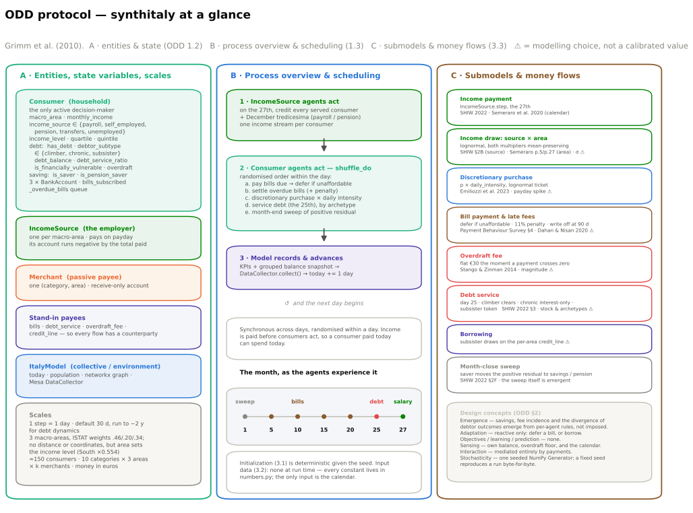

Everything from the analysis pipeline, the figure layer and the docs, collected into one directory.
A single composite schematic of the whole protocol — entities and state variables, the within-day scheduling loop, and the submodels with their sources. It is generated from docs/ODD.md by presentation/scripts/make_diagrams.py.
d06_odd_overview.png · .svg (vector, for print)

ODD_protocol.html — the same figure with the protocol written out around it: entities, scheduling, design concepts, and every submodel tagged with its source and its ⚠ modelling-choice flag.
RESULTS_validation.md — a thesis-ready results section covering Studies 0/A/B/C/D and the three paper replications, with the limitations carried forward.
f00_overview and f00_overview_v2 — what enters the model, what happens, what comes out. Two variants under comparison: v2 draws the daily events as categories on one row rather than as a chain, because they fire on different scheduled dates. Then 19 result figures, each as PNG, SVG and PDF, plus CAPTIONS.md (which covers f01–f19; the f00 captions live in the thesis). Use the SVG or the PDF for print.
d01 architecture · d02 day-step · d03 money-flow · d04 methodology pipeline · d05 provenance tiers · d06 ODD overview. PNG + SVG, with Mermaid source for d01–d05.
demo · analysis · clustering · prediction, executed headless.
The provenance layer, written by scripts/build_evidence_pack.py after this script runs. It holds the result JSONs and features.csv again alongside five caveated figures, plus two listings that are generated from the code itself rather than maintained by hand: feature_sets.md (the fair / leak / saver-fair column sets, read off the real frame) and run_configurations.md (every ItalyModel(...) construction in the repository, found by parsing the source, which is what establishes that every figure and number comes from the same 800 × 720 configuration).
{kind=link}
{kind=link}